TU Dublin Computer Science Project Fair: 2019
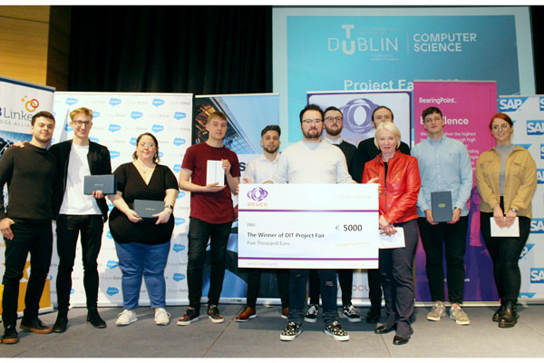
The first ever Computer Science Project Fair as TU Dublin took place in the Gleeson Theatre on Tuesday 9th April 2019. This year the Fair showcased the project work of 68 students from across TU Dublin City Campus.
Prize recipients at the Project Fair 2019 included the following:
|
Sponsor |
Prize |
Recipient(s) |
Project Description |
Presenter |
|
Ocuco |
Overall Prize for Best Project at Project Fair 2019 |
Eric Strong |
Property Insights. |
Josephine Austin |
|
S.A.P |
Luan O’Carroll Innovation Award |
Victor Gonzalez |
Sketch ML |
Alan Fahey |
|
Fidelity Investments |
Most Innovative Software Engineering |
Robert Vaughan |
‘Engage’ : A Blockchain Solution providing Ticket Transparency |
Kevin Barron |
|
Fidelity Investments |
Most Customer Focused Award |
Eimear Dillon Turner |
CBT Companion |
Kevin Barron |
|
DIT Hothouse |
Most Commercialisable Project |
Abdulaziz Ismail |
Ecudate:eLearning |
Andrew Marsh |
|
Salesforce |
Most Original Project |
Steve Martin |
LogoViz:Cloud Brand Analysis |
Ciarán Barry |
|
BearingPoint |
Best Communicator |
Szymon Bialkowski |
Predictive Data Football App |
Seán Fitzgerald |
|
DocoSoft |
Most Well-Rounded Project |
Mark Barrett |
Lapis:A Cloud Based API System |
Eva McDonnell |
|
DocoSoft |
Women In Technology Award |
Nicola Mahon |
Pharmapp:A blockchain risk mitigation system |
Eva McDonnell |
|
HubLinked |
CS14 Software Innovation |
Evgeny Timoshin |
Architecture and Design Workflow with VR |
Dr Deirdre Lillis |
Overall Prize for Best Project - Eric Strong
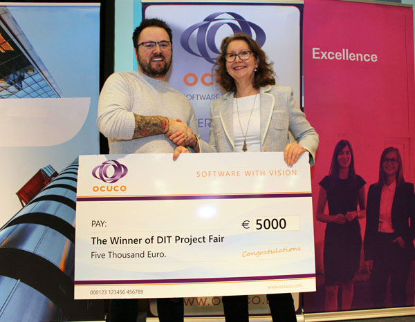
Luan O’Carroll Innovation Award - Victor Gonzalez
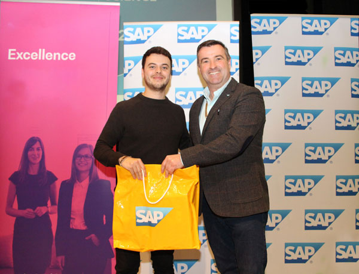
Most innovative Software Engineering - Robert Vaughan
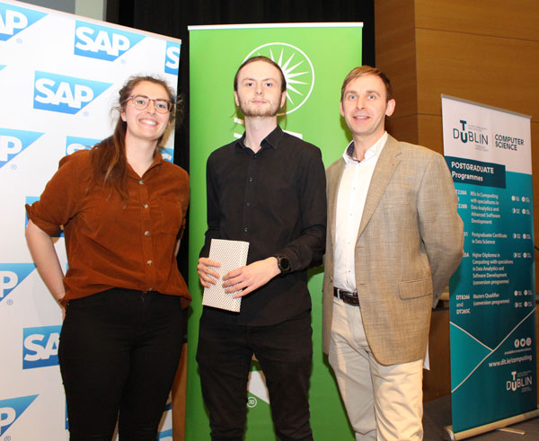
Most Customer Focused - Eimear Dillon Turner
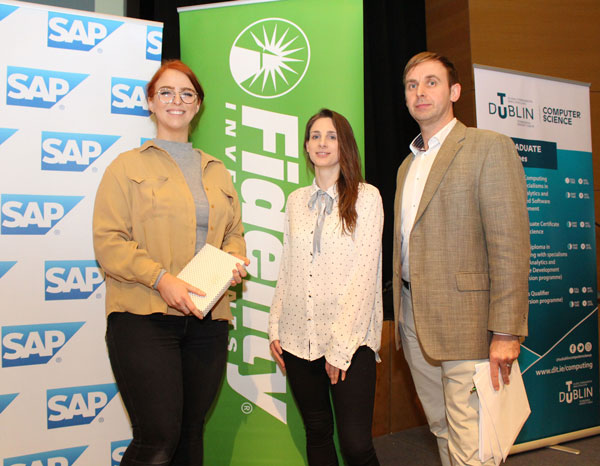
Most Original Project - Steve Martin
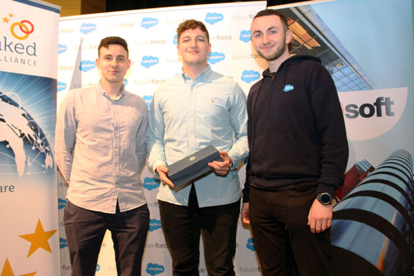
Best Communicator - Szymon Bialkowski
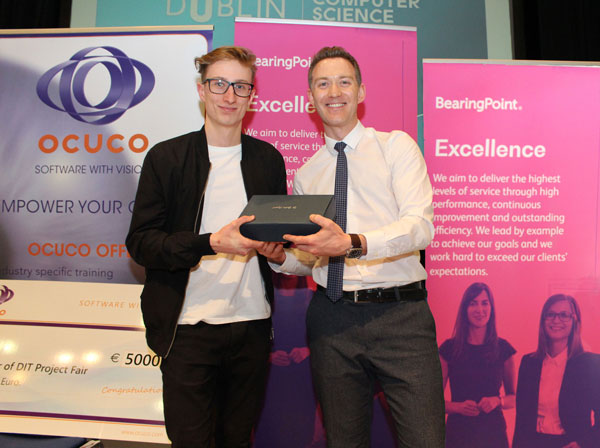
Most Commercialisable Project - Abulaziz Ismail
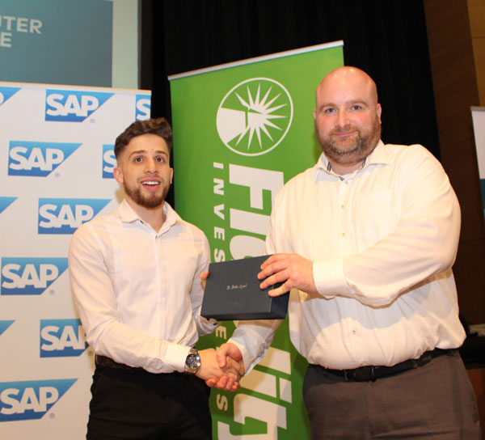
Most Well-Rounded Project - Mark Barrett
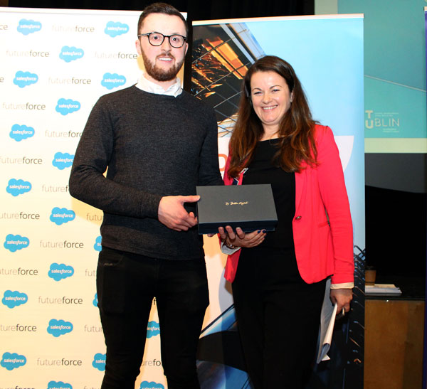
Women in Technology Award - Nicola Mahon
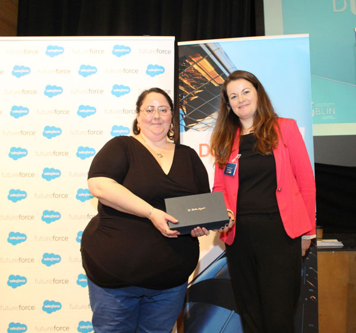
HUBLinked CS14 Innovation - Evgeny Timoshin
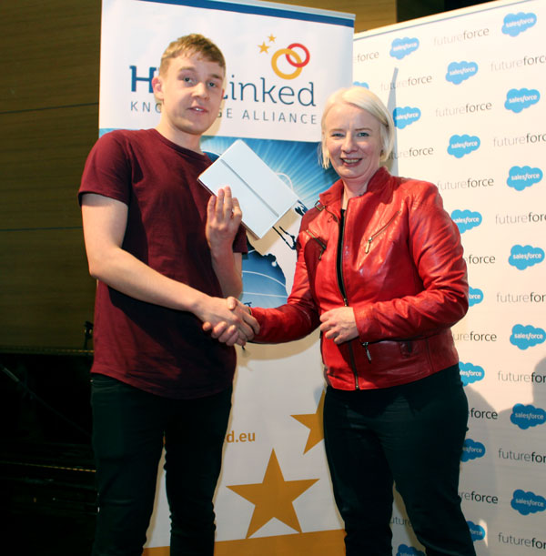